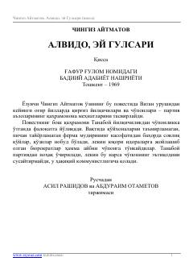

AETanaboyning hayoti va uning sodiq yilqisi Gulsarining so'nggi safari haqida qissa.
Chingiz Aytmatovning bu qissasi urushdan keyingi og'ir yillarda qirg'iz chorvadorlari hayotini tasvirlaydi. Asarning bosh qahramoni Tanaboyning adolatsizlik tufayli partiyadan nohaq chiqarilishi va uning sodiq yilqisi Gulsarining so'nggi kunlari parallel ravishda hikoya qilinadi. Asar inson va hayvon o'rtasidagi chuqur bog'liqlikni va hayotning o'tkinchiligini poetik tarzda ifodalaydi.